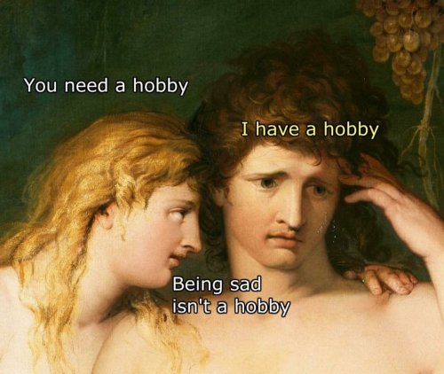

"There is a sensation in you, and you say that you are depressed or unhappy or blissful, jealous, greedy, envious. This labelling brings into existence the one who is translating this sensation."
-UG Krishnamurti
"The body is a safe refuge for the sense of 'me.' It is rarely discovered there."
--Rupert Spira
You wake with it in the morning. Or maybe it hits later in the day, or wakes you at night. If you succeed in making it out of bed, you lug it around, trying to force yourself to function.
Intense emotional pain. Depression, anxiety, panic. Sad. Heavy. Unbearable.
The mental loop runs, repeating the same blah blah blah word for word, all day, every day, over and over.
It's irresistible and can’t be ignored.
“Feel feel feel. Augh Augh Augh. Feels like this, feels like that. Don’t like don’t like don’t like don't like. Make it stop make it stop make it stop. Somebody save me!”
No saving comes.
Nothing works, there’s no hope, you’re obviously in trouble and beyond help or relief, you’re a failure a loser broken bad deserving no better. No one has it as bad as you. At least try to hide how messed up you are from others.
Mind’s attention constantly on the You. What you feel, what you don’t want, what you can’t handle, what you think caused it, and most importantly, what you think it means.
Y’know, about you.
Who are you without it? Not a clue.
Which is probably why it hasn't been noticed that that feeling isn’t actually there.
It’s not in the body.
Yes, there’s a sense of it. But that’s just another feeling.
And yes it feels like it’s in the body, as you point to solar plexus, stomach, head.
But in that case it should show up on an X-ray, an MRI, a CAT scan, light or heat sensor, shouldn't it?
Like every other body-thing does.
And then a surgeon should be able to go in and blessedly-thank-you-lord, scoop that sucker out and remove it. Thank you doctor, thank you!
But no.
This runs-your-life thing which is so intense, so obvious that no one could possibly question its reality because duh, could itbee it's not actually findable?
Could it be it’s an illusion, an idea, a story, an intangible, unprovable concept- which isn’t literally there?
Whaaat?
I mean, here's you and everyone else absolutely knowing that Of Course!feeling is in the body and Of Course! the body is where it needs to be dealt with, sat with, transcended, converted, managed, controlled, listened to, honored, respected, felllllllllt, and interpreted.
So it's a lifetime of trying to fix something that isn’t where you're looking.
Trying to fix or feel something that is nothing.
And then wondering why you don’t succeed.
Feelings aren’t feelings. They’re thoughts.
Perhaps this is why you want others to validate those feelings, going on and on and on to anyone who happens to stand still near you for more than a minute, endlessly describing how you feel.
Validate. As in make valid. As in, not valid already, it needs to be made valid. By somebody. Anybody.
But nothing real needs to be validated. Your shoes don’t need to be validated, the cat doesn’t need to be validated. Only feelings and the story of who you are want validation.
Not that the mind has been willing to let you notice any of this. That would mess up its, Of course I exist, look how much I hurt! gig.
The sense of self far prefers to focus on solving the terrible problem of terrible feelings, than to notice that they, and it, don’t actually exist anywhere.
Turns out you’re not actually defending against feelings. You’re defending against the nonexistence of self.
You're just using “feelings” to do that.
So ok fine, blah dee blah blah blah. Who cares? Real or not, it’s called Painand it’s awful. Real or not, something needs to be done.
Right?
And since that sense that something must be done is very strong, and since you’re going to keep trying to do something about it anyway, you may as well try something different for a change.
So here are a couple ways to play with that feeling you love to hate, whether real or illusory.
Just for fun. Not intended to be “The answer” or a miracle cure or even a cure at all.
Since nothing is sick and nothing needs healing.
1- Notice the timing, notice the WHEN.
Notice when your attention is called to a feeling. (The mind will say “It’s all the time,” but that is not true.) When you notice, “Oh crap I feel terrible,” ask yourself, How am I using this situation to know who I am?
And then answer the question.
Because does any feeling- any contraction, any heaviness- make a person bad, a failure, unlovable? It’s just a sensation. Does it have the ability to make a person, at all?
2- Ask, "Why does it matter what I feel?"
Take, “I don’t like it” off the table, because nothing in the universe, I mean nothing, cares what anybody likes. And take, “It’s uncomfortable” off the table too, because that’s different wording for just another feeling.
And then notice there’s a ton of supposed meaning about who you are- as a person- laid on top of the feeling. Meaning is a concept though, a mind-concoction. Take that off too.
And then see what's left.
It could be that without all that dislike and meaning layered on top, intense feelings become remarkably... less-so. It could be they become just an interesting experience- a heaviness, a flutter, a dark color, a contraction.
Just like that.
Why does it matter if a feeling happens? What cares if a feeling happens on this earth?
Don’t settle for “Me, I care.” Point to that. If you point to the body, see if skin, bones, blood, nostrils, elbows, heart muscle, care about anything at all, let alone some unfindable emotion.
It could be there’s nothing to point to.
So that the question, Why does it matter what I feel? might open surprising new doors, if you’re willing.
Which, of course, you may not be.
After all, the devil you know might be preferable to finding out about one you don’t.
And that's fine. Just painful.
On the other hand, once don’t like and meaning and importance are peeled off from sensation,
a quick and effective noticing
of something other than self
might suddenly happen.
And who knows?
That might feel
Pretty darn good.
Watch Judy and Shiv Sengupta discuss spiritual anarchy
Click here to watch Judy on Buddha at the Gas Pump
watch Judy and Walter have fun chatting about about nonduality, the self, consciousness, awareness, free willand other light and breezy stuff
watch Judy and Robert Saltzman talk nonduality
first:- - https://www.youtube.com/watch?v=BAa3UCEyROQ
2nd: - -https://www.youtube.com/watch?v=7fv_vsvaejs
"We walk around all day in this virtual reality, physically experiencing what the mind is telling us. If we stop, see through it all, and give it up, what will become of us? It’s scary. Everything in the end is a defense against nothingness.”
--Adyashanti
"It’s absolutely stupid to spend your time doing things you don’t like in order to go on doing things you don’t like."
--Alan Watts
“Let everything happen to you.
Beauty and terror.
Just keep going.
No feeling is final.”
--Rainer Maria Rilke
Bad Feelings
